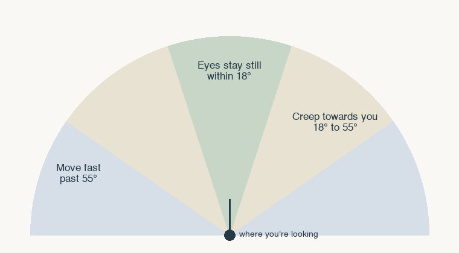
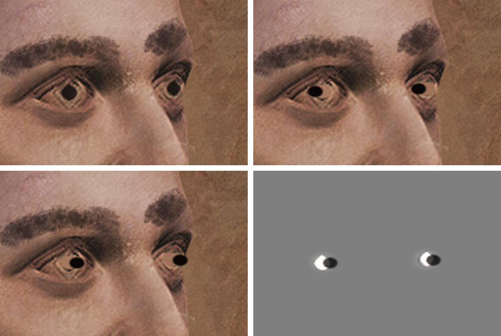

The goal
There's a photo in the house whose eyes follow you around. We didn't want you to see the pupils sliding, because that's not scary. Instead, if you look right at it, it's just a normal photo. But look away and back again, and the eyes are already on you.
It also had to fit the room. If the eyes didn't have the same lighting and fog as the rest of the photo, they'd look stuck on.
How it works
A C# script decides where the pupils should look and when they're allowed to move. A shader draws the photo a second time on top of itself and only changes the eyes.
1. Only moving when you look away
Every frame, the script checks how far the photo is from where you're looking. If it's within 18 degrees, the eyes don't move at all. If it's off to the side of your view, between 18 and 55 degrees, they creep towards you slowly. Once it's out of view, past 55, they move faster.

float angle = Vector3.Angle(cam.transform.forward, toPhoto);
bool watched = angle < watchedAngle;
float speed = angle > unseenAngle ? unseenSpeed : driftSpeed;
if (!watched) gaze[e] = Vector2.MoveTowards(gaze[e], target, speed * dt);2. Repainting the eyes without losing the lighting
The trick is a multiply. The shader paints the eyes with the pupils moved, divides that by the photo's original colours, and multiplies the lit photo by the result. Everywhere outside the eyes that works out to 1, so nothing changes, and the new pupils keep exactly the lighting and fog the photo already had.

To move a pupil, the shader first paints over the original one with the colour of the eye around it, sampled from six points in a ring. Then it lightens the eye opening a little so the new pupil reads, and draws a near-black pupil at the new spot, kept inside the eye so it never gets cut off at the edge.
One catch: a multiply can only brighten by 2x, which isn't enough to paint white eye over a dark iris. So we draw it twice, each time doing the square root of the change, which gets us up to 4x.
In the clip at the top, the eyes are set to follow all the time and faster than normal so you can see them move. In the game they only move when you're not looking. The still images were rendered with a Python port of the shader on the photo's texture.